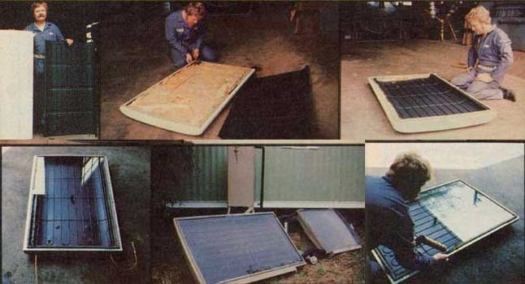

Below: Dennis Burkholder displays the Hotpoint door and heat excharger which fit together so well to form a flat-plat solar collector panel... the door with its interior lining ? but not its insulation ? removed and the exchanger ready to go into place . . . and the two put together. SECOND ROW: The first of two panes of glass has been cut to fit under the rubber gasket around the edge of the refrigerator door and is now seated in a bead of silicone as Dennis prepares to mount the second sheet of glass ... the nearly completed collector clear show copper tubing has been run through an end wall of the refrigerator door to connect the solar panel to a storage tank and other parts off active water heating system ... the completed installation.